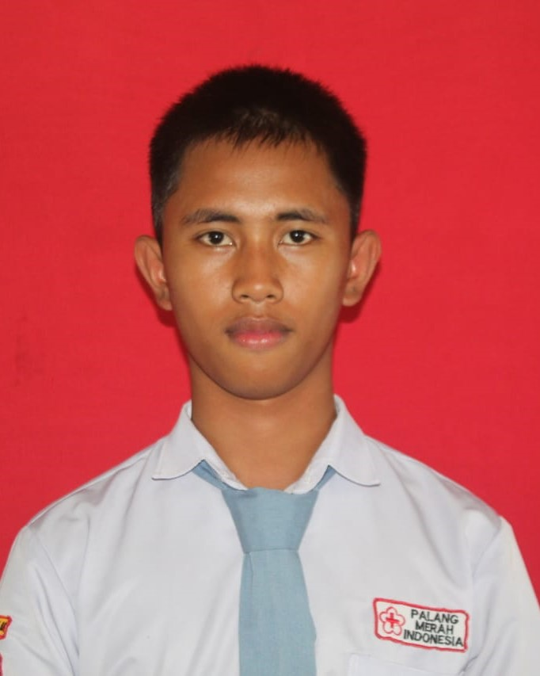
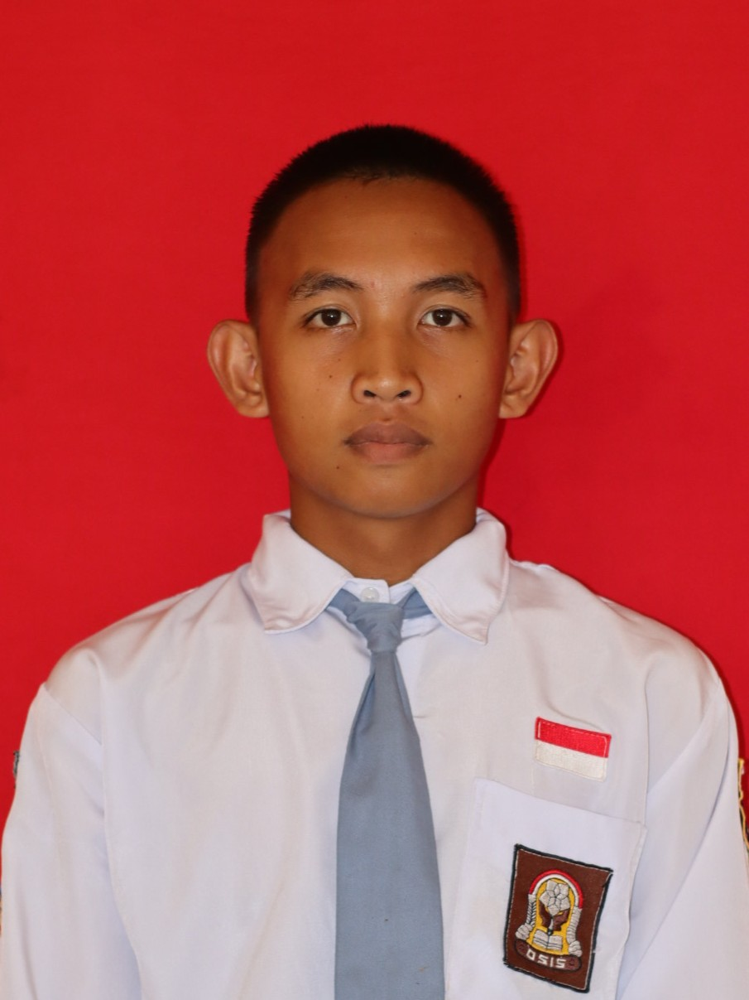
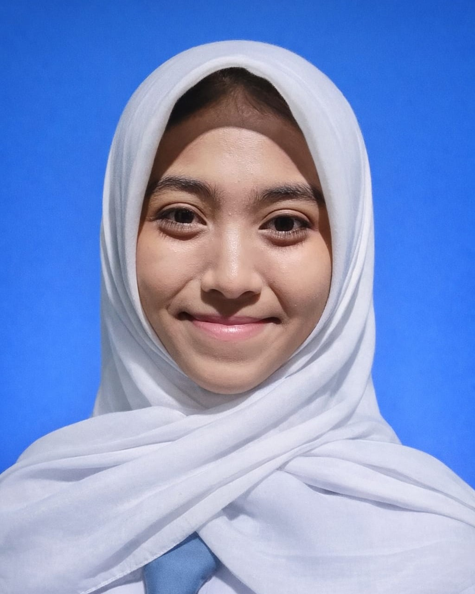
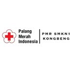

STRUCTURE

Ketua
Radit Nurdianto

Wakil Ketua
Evan Manuela Zerlino

Sekretaris 1
Maghribatul Nisa S.Y

Sekretaris 2
Novi Aurelia

Bendahara 1
Sagita Setia Ningrum
Bendahara 2
Melani

Palang Merah Remaja (PMR) SMKN 1 Kongbeng pertama kali berdiri pada 11 Agustus 2003 sebagai wadah pengembangan jiwa kepedulian dan kemanusiaan bagi siswa. Sejak 24 Februari 2022, PMR SMKN 1 Kongbeng mulai menjalin kerja sama dengan PMI Provinsi Kalimantan Timur untuk memperkuat peran dan kualitas kegiatan kepalangmerahan di lingkungan sekolah
Membentuk murid SMKn 1 Kongbeng menjadi relawan muda yang berjiwa kemanusiaan, terampil dan juga berakhlak mulia berlandaskan 7 prinsip dasar dan tribakti PMR dan menjunjung tinggi nilai-nilai pancasila.

Radit Nurdianto

Evan Manuela Zerlino

Maghribatul Nisa S.Y
Novi Aurelia
Sagita Setia Ningrum
Melani
Berikut dokumentasi kegiatan dan prestasi PMR SMKN 1 Kongbeng selama periode tahun ajaran 2025-2026:

Lomba Jumbara di Sangatta

Lomba Jumbara di Sangatta

Lomba Jumbara di Sangatta

Lomba Jumbara di Sangatta